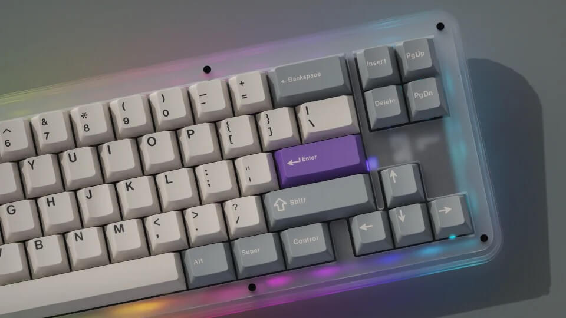

Klawiatury mechaniczne
Klawiatury dzielimy na membranowa i mechaniczne. Pierwsze z nich są dużo tańsze. Niestety, wiąże się to często
z ograniczoną żywotnością oraz niskim komfortem użytkowania.
Z tego powodu bardzo popularne są klawiatury mechaniczne. Zamiast zwykłej membrany, która jest bardzo podatna
na zużycie oraz nie charakteryzuje się przyjemnym klikiem,
stosuje się w nich specjalne przełączniki. Są one w pełni mechaniczne. Naciśnięcie klawisza powoduje
zamknięcie obwodu elektrycznego. Informacja o tym jest następnie
przekazywana do komputera. Dzięki takiej konstrukcji przełącznik jest dużo bardziej wytrzymały, a użytkowanie
klawiatury staje się czystą przyjemnością.


Główną zaletą klawiatury mechanicznej jest komfort użytkowania. Różnica między nią a klawiaturą membranową
jest diametralna. Ważnym aspektem jest także duża możliwość
dostosowania klawiatury do własnych potrzeb. Możliwe jest zbudowanie własnej klawiatury wykorzystując jedynie
odpowiednie podzespoły. Pozwala to na uzyskanie klawiatury
idealnie dopasowanej do użytkownika. Klawiatury mechaniczne cechują się także wysoką wytrzymałością (do 100
mln kliknięć na przełącznik). Jedyną wadą jest ich cena.
Klawiatury mechaniczne można w bardzo łatwy sposób modyfikować. Społeczność tworząca się wokół nich jest
bardzo aktywna. Wystarczy odwiedzić odpowiednie fora, aby
dowiedzieć się wielu ciekawych informacji. Można na nich znaleźć wiele ciekawych pomysłów na modyfikacje
klawiatury. Wiele osób tworzy własne klawiatury, które
są w pełni dopasowane do swoich potrzeb. Często wykorzystują oni ciekawe techniki, takie jak naklejenie taśmy
malarskiej na dół PCB. Pozwala to na uzyskanie
lepszego i głębszego dźwięku. Wiele osób również umieszcza w przełącznikach specjalny smar, który sprawia, że
przełączniki są bardziej gładkie.